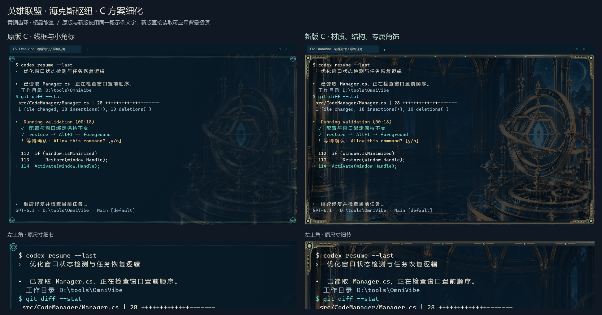
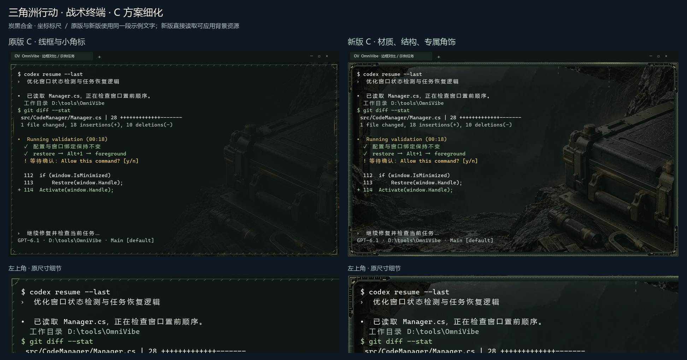
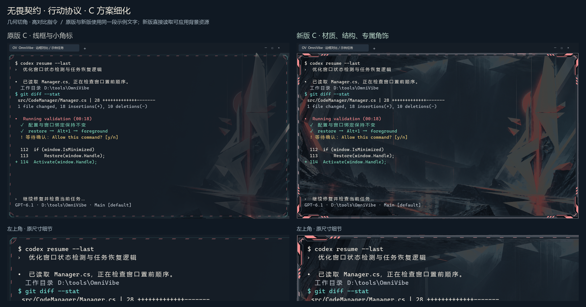
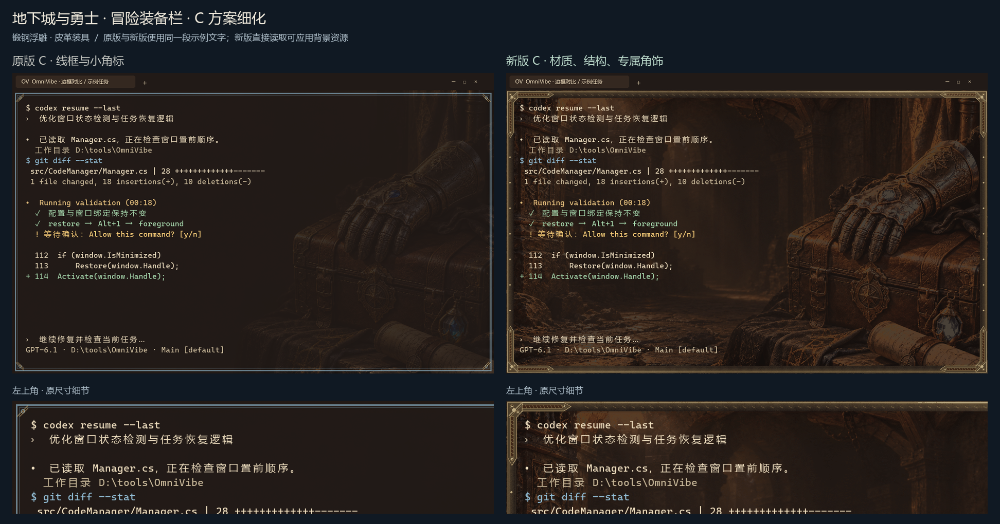
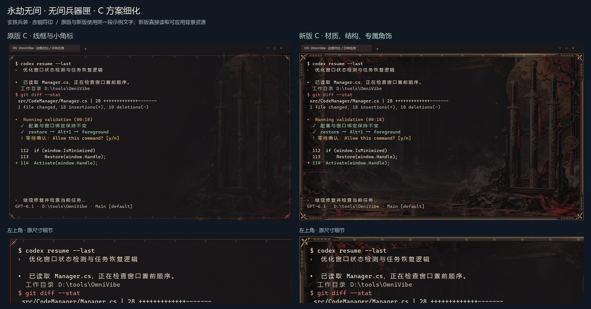
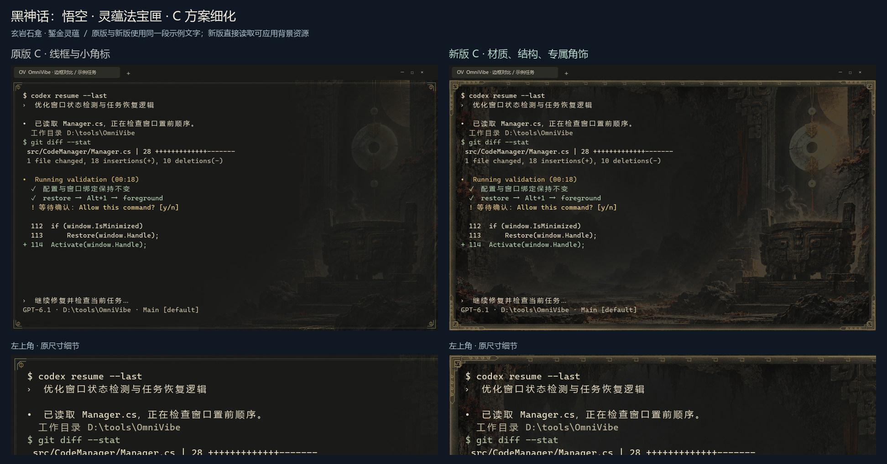
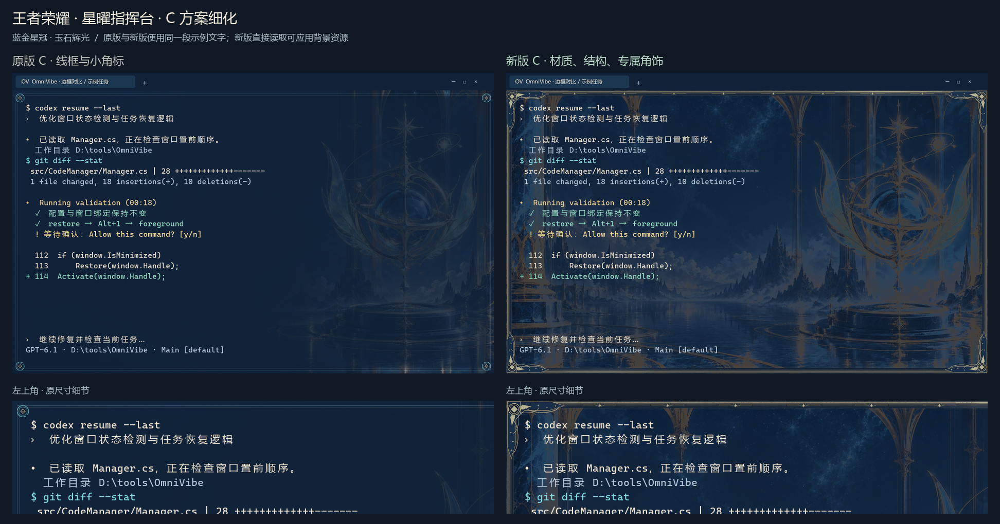
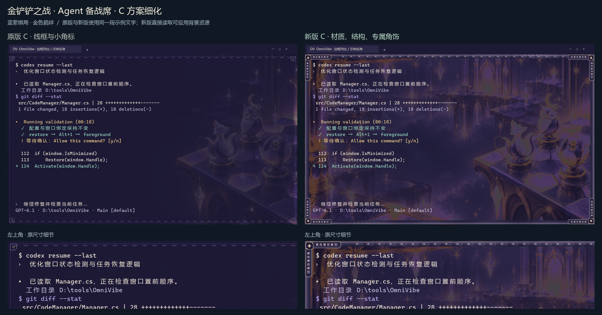
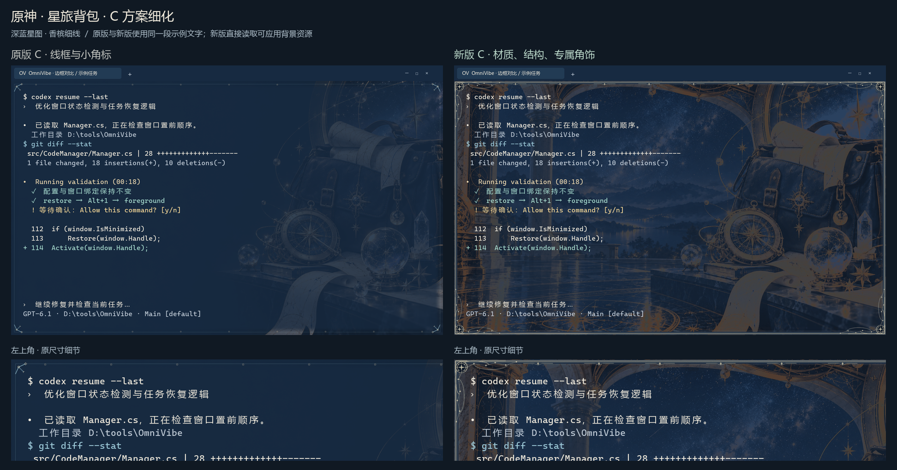
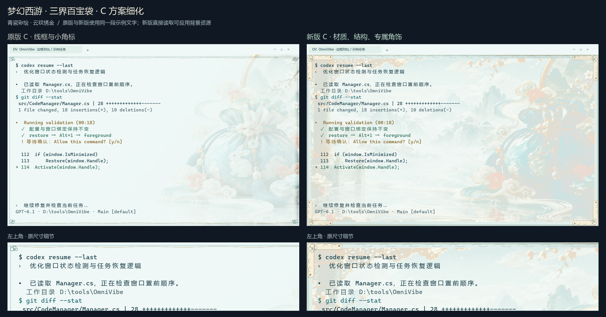

英雄联盟 · 海克斯枢纽黄铜齿环 · 棱晶能量看实际背景动效与不同尺寸$ codex resume --last 正在检查窗口恢复与任务状态。 + Activate(window.Handle); 等待你的下一条指令…常规窗口 · 窄窗口 · 150% DPI 预览 · 原始动效 GIF
三角洲行动 · 战术终端炭黑合金 · 坐标标尺看实际背景动效与不同尺寸$ codex resume --last 正在检查窗口恢复与任务状态。 + Activate(window.Handle); 等待你的下一条指令…常规窗口 · 窄窗口 · 150% DPI 预览 · 原始动效 GIF
无畏契约 · 行动协议几何切角 · 高对比指令看实际背景动效与不同尺寸$ codex resume --last 正在检查窗口恢复与任务状态。 + Activate(window.Handle); 等待你的下一条指令…常规窗口 · 窄窗口 · 150% DPI 预览 · 原始动效 GIF
地下城与勇士 · 冒险装备栏锻钢浮雕 · 皮革装具看实际背景动效与不同尺寸$ codex resume --last 正在检查窗口恢复与任务状态。 + Activate(window.Handle); 等待你的下一条指令…常规窗口 · 窄窗口 · 150% DPI 预览 · 原始动效 GIF
永劫无间 · 无间兵器匣玄铁兵装 · 赤铜符印看实际背景动效与不同尺寸$ codex resume --last 正在检查窗口恢复与任务状态。 + Activate(window.Handle); 等待你的下一条指令…常规窗口 · 窄窗口 · 150% DPI 预览 · 原始动效 GIF
黑神话：悟空 · 灵蕴法宝匣玄岩石龛 · 錾金灵蕴看实际背景动效与不同尺寸$ codex resume --last 正在检查窗口恢复与任务状态。 + Activate(window.Handle); 等待你的下一条指令…常规窗口 · 窄窗口 · 150% DPI 预览 · 原始动效 GIF
王者荣耀 · 星曜指挥台蓝金星冠 · 玉石辉光看实际背景动效与不同尺寸$ codex resume --last 正在检查窗口恢复与任务状态。 + Activate(window.Handle); 等待你的下一条指令…常规窗口 · 窄窗口 · 150% DPI 预览 · 原始动效 GIF
金铲铲之战 · Agent 备战席蓝紫棋局 · 金色羁绊看实际背景动效与不同尺寸$ codex resume --last 正在检查窗口恢复与任务状态。 + Activate(window.Handle); 等待你的下一条指令…常规窗口 · 窄窗口 · 150% DPI 预览 · 原始动效 GIF
原神 · 星旅背包深蓝星图 · 香槟细线看实际背景动效与不同尺寸$ codex resume --last 正在检查窗口恢复与任务状态。 + Activate(window.Handle); 等待你的下一条指令…常规窗口 · 窄窗口 · 150% DPI 预览 · 原始动效 GIF
梦幻西游 · 三界百宝袋青瓷彩绘 · 云纹绣金看实际背景动效与不同尺寸$ codex resume --last 正在检查窗口恢复与任务状态。 + Activate(window.Handle); 等待你的下一条指令…常规窗口 · 窄窗口 · 150% DPI 预览 · 原始动效 GIF